Overview
A suggest box is similar to a textbox since the user can type any text in a suggest box, but it can also offer suggested options to the user to help guide the input. As the user types in a value, the list of suggested options will be filtered and appear below the suggest box, so that the user can either select one of the suggested options or continue typing. The list of suggested options can come from a SQL query in a database or/and from a list of pre-configured options.
Unlike a dropdown box, the list of suggested options for a suggest box will not be shown in the Form Designer. To see the suggested options, it is necessary to view it in Preview Mode or run a case, and the suggestions will only appear after the user enters at least one character in the field.
To add a suggest box to the form, drag its  icon from the toolbar and drop it onto the form design.
icon from the toolbar and drop it onto the form design.
While designing a DynaForm, the options of a suggest box are not visible:
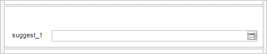
However, while previewing a DynaForm or running a case, the options work normally:
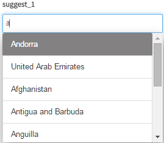
Managing Suggest Controls
After adding a suggest control to the form, it is possible to customize its functionality and behavior, using the properties panel.
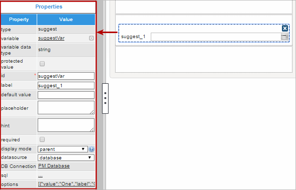
The properties set by default are the following:
- type The unique identifier for the control. Set by default as "
suggest". This definition can not be modified. id Set by default as
suggest000000000XwhereXstarts numbering from 1. After a variable is associated with this control, the ID changes to the name of the variable, nevertheless it is possible to change the ID.
Note: If a suggest box has an associated variable, its ID must be same as the name of the variable associated with the suggest box.- label The text which appears to the left or above the control in the form. By default, it is set to "
suggest_X" whereXstarts numbering from 1. - display mode The mode of the control, which can be:
- edit: The user may change the control's value.
- view: The user may only view the control's value, but not change it.
- disabled: The control is deactivated and grayed out, but the user may still view its value.
- parent: Default. The control's mode is inherited from its parent, which is the DynaForm, subform or grid which contains the control.
- datasource Available Version: ProcessMaker 3.0.1.8 and on.
Set by default as "database". See this documentation for more information of the data source available for this control. -
DB connection The database where the SQL query is executed to populate the list of options in the suggest box. Set by default to "
PM Database", which is the wf_{WORKSPACE} database of the current workspace, which by default is named wf_workflow. If the sql property is left blank, then no database will be queried. When a variable is associated with this control, it automatically inherits the DB connection used by that variable.Note: The * identifier is not supported in SQL queries.
Suggest Control Properties
The properties related to this web control are the following:
| Property | Description |
|---|---|
| Type | suggest (readonly) |
| Variable | Click on the ... option to select the variable from the list of available variables. Check this section to learn more of how to relate a variable to a control.
|
| Variable Data type | After a variable has been related to the control, this property shows the data type of the variable (readonly). |
| Protected Value | Available Version: ProcessMaker 3.0.1.8 and on. This property protects the information stored in variables. The assigned variable won't be able to be modified or changed in any way, protecting the variable value. |
| ID | [Required] Field and HTML unique identifier. |
| Label | Set the label of the control in this property |
| Default value | Value set by default when the value retrieved is null.
Please read this documentation to learn how this control manages default values. |
| Placeholder | Set the text that will be shown as help to fill the field inside the fields. |
| Hint | Used to show help when the suggest control is rendered. It is shown when the pointer of the mouse is hovered over the ? icon. |
| Required | By checking this option, an asterisk is added in the label to indicate that the field is required. It means that an option must be selected mandatorily from the control. When a required field is not filled in with any value, it will not possible to go to the next step. |
| Display Mode | [Required] Display mode:
|
| Datasource | Available Version: ProcessMaker 3.0.1.8 and on. The data source for the list of available options:
|
| DB Connection | For a suggest control, if needing to store a value retrieved from a database, select from the dropdown of this property the database connection that will be used (the connection must be already created in the process, check this section to learn more about it). |
| SQL | Insert in this property the SQL query to populate the option of the control from database. The data retrieved from the query will define a domain of options for the control. This means that the options shown as "suggest" to the user will belong mandatorily to this domain. The suggest control requires two parameters: KEY and LABEL. SELECT Field_Key, Field_Label FROM TABLE Note: The * identifier is not supported in SQL queries. Nevertheless, if the SQL query selects only one parameter, the same parameter will be assigned as the KEY and the LABEL. Take into consideration the following restrictions:
|
| Data Variable | Available Version: ProcessMaker 3.0.1.8 and on. Assign the array variable using the @@ button.
|
| Options | Define in this property the options that will be used to define the value used in the field. It is possible to use SQL queries and pre-defined Options to define the domain of options for this control. The "suggest" shown to the users as they enter text will mandatorily belong to this domain. |

* Available from version 3.0.1
Some Additional Considerations
- For this control, it is not mandatory to select an option from the defined domain of options (SQL or/and Options). If the user enters text that is not available in the domain, it will be the value that is stored in the variable.
- The suggest control searches the text typed by the user in any place of the string (start, middle).
- For external database connections with PostgreSQL, take into account that suggest fields can only query single-dimension data in each one of the expressions in the query (ProcessMaker works only with "fields" and not "rows"). Also, remember that the expressions in the query must be explicit according to the fields in the table.
Note: Depending on the version of PostgreSQL or the database scheme, expressions in the query as well as the name of the table must have quotation marks (if it is required). For example:
Otherwise, a native error of PostgreSQL might be thrown when executing the query.SELECT "field1", "field2" FROM "tabla1"
Setting Dependent Fields
Note: From version 3.0.1.1 the property "Dependent fields" property is no longer available. To set the dependency, simply define proper queries for the variables assigned to the dependent controls (Check the example of this section).
Suggest controls can be set as dependent fields of other fields based on their states and values.
In order to establish this dependency, the variables should normally be defined with a SQL SELECT statement to populate the fields with values from a database, which will be shown once the DynaForm is rendering in the preview or running the form.
For example, for the country-state-location dependency, let's add three suggest controls in the DynaForm designer and relate then to the variables COUNTRIES, SUBDIVISION and LOCATION.
The COUNTRIES variable and has the following SQL sentence defined when the variable was created:
Note: The * identifier is not supported in SQL queries.
The SUBDIVISION variable has the SQL sentence:
WHERE ic_uid = "@#COUNTRIES" ORDER BY is_name
And for the LOCATION variable:
WHERE ic_uid= "@#COUNTRIES" AND is_uid= "@#SUBDIVISION"
Note: Take into account these typing rules to use case variables in the queries.
For the dependency and correct retrieve of the data the query must be case sensitive. It means that if the name of the table or the name of the fields contain uppercase or lowercase letters in the database, the query mandatorily must have the same considerations.
Then, relate each suggest controls added in the form to the COUNTRIES, SUBDIVISION and LOCATION variables. The dependency will be set automatically.
When rendering the form, let's look for "Argentina" in the first suggest field.
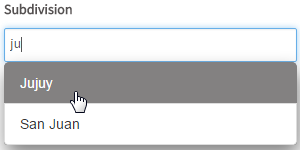
As you can see, the suggest controls "suggests" all coincidences in the field as text is entered. After selecting "Argentina", the dependency is shown in the fields by filling the other two with the subdivision of that country (with the first returned value) and the location which is dependent of the country and the subdivision (thus the options shown are the ones that depend of the second and the first field)
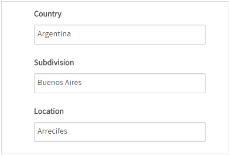
For the "Subdivision" field, let's look for "Jujuy"
After selecting "Jujuy" and filling the Subdivision field, the dependency of "Location" also changes according to the country selected ("Argentina") and the subdivision ("Jujuy"). Now, let's see the options for "Jujuy" of "Argentina"
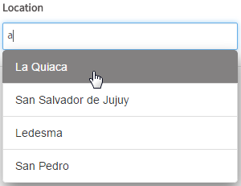
If having problems setting the dependent fields, take into account the following
- The name of the variables may have not respected the name of the fields or the table set in the database (since the query must be case sensitive).
- The dependency of the controls may have not been set correctly.
- Take into account that
"ic_uid="@#COUNTRIES""does not retrieve any data when executing the queries. There must be a blank space between the equal symbol and the variables so that the correct expression should be"ic_uid = "@#COUNTRIES""
Note: Dependent fields are not available when a control is set in view mode.
Suggest Control Example
For this example add a "suggest" control by dragging and dropping it into the Dynaform designer and as a result it would look like the image below.
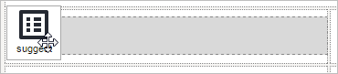
After adding the control the Create Variable window will appear. For this example, create a variable named "language" and configured the "settings" option as seen in the image below. Then click on the "Save" button.

Now, go to the control and click on any empty space within it. Its properties will be displayed on the left hand panel as seen in the image below. Observe that the "variable", "variable data type" and "id" have the values of the variable.
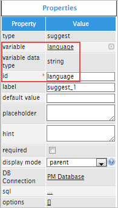
Now for the control to have a proper name instead of "suggest_1", change the "label" property to "Language:".
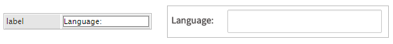
The following property is the "default value" property which will set a value by default when the value is null. Try adding a value by default like "English" and the result would be the following:
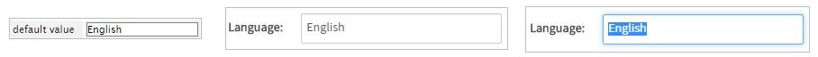
Next is the "placeholder" property which shows help to fill the field as a placeholder. As an example try adding the following text: "Type your language" and when running a case the text will be displayed inside the control. When trying to type your language the placeholder will disappear.
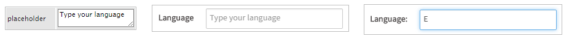
The "hint" property is used to show help by adding and icon on the right side corner of the control with the text added in the property. For example, a hint can be "Add your language" and when running a case the icon will displayed the text of the hint.
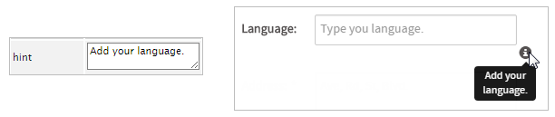
Next is the "required" property which adds an asterisk in the label to indicate that the field is required. As shown in the image below if the field isn't filled then an error message will be displayed.
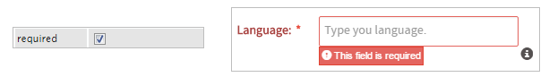
The "display mode" property allows to make different alterations to the control. Click on the question mark next to the control to learn more about it. Select a mode for the control by clicking on the arrow of the dropdown.

The illustration shows the different alterations the options "parent", "edit", "view" and "disabled" can provide to the control.
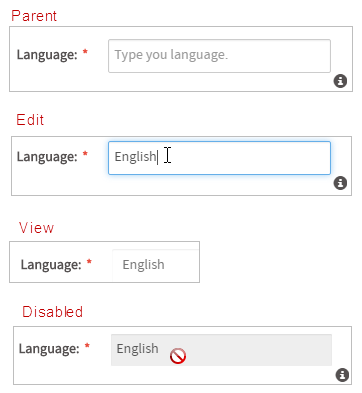
The "DB Connection" property is used to select between the list of database connections defined in the process objects. And the "sql" property is used to query values from the database. For this example the "Suggest" control will be populated with all languages available in a table named LANGUAGE, therefore use the following query by clicking on the underlined ellipsis ... in the "sql property". When the "Sql Editor" is opened add the following code:
Note: The * identifier is not supported in SQL queries.
When running a case the control will call al the values inside the table LANGUAGE. For instance, start type the language of your preference and the control will provide a list of languages that meet the requirements of the text being written.
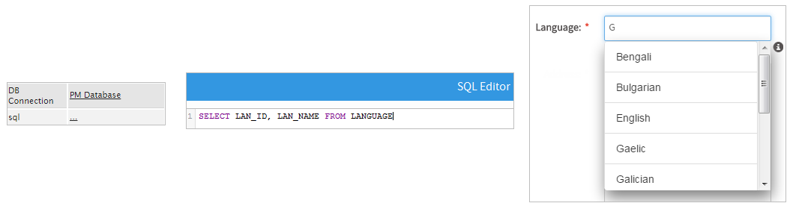
Finally the "options" property adds values set by the user which then populate the "suggest" control. This can be used instead of a query. To learn more about this property read this documentation.
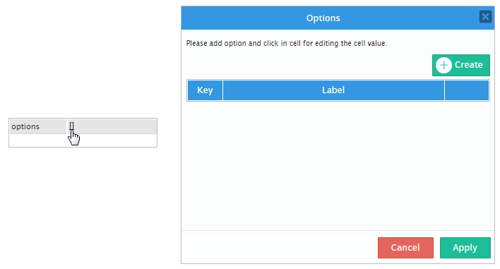
JavaScript in Suggest Boxes
To learn how to manage DynaForm fields using JavaScript, see JavaScript in DynaForms.
Suggest boxes in ProcessMaker 3 have the following field components:
- Label: The text displayed above or to the left of the field to identify it to the user.
- Text: The text (label) displayed for the selected option or the custom text entered by the user.
- Value: The stored value (key) for the selected option or the custom text entered by the user.
JavaScript Methods
Some of the JavaScript methods to manipulate suggest boxes include:
| Method | Description |
|---|---|
jQuery("#fieldID").getControl() |
Use this function to obtain the control's input field, rather its DIV which is obtained with |
jQuery("#fieldID").disableValidation() |
Disable the validation of the field, so it doesn't check whether the field is required when the form is submitted. |
jQuery("#fieldID").enableValidation() |
Enable validation of the field, so it will check whether the field is required when the form is submitted. |
jQuery("#fieldID").getValue() |
Returns the value (key) of the selected option or the custom text entered by the user. |
jQuery("#fieldID").getText() |
Returns the displayed text (label) of the selected option or the custom text entered by the user. |
jQuery("#fieldID").getLabel() |
Returns the field's label, which is the text displayed above or to the left of the field to identify it. |
jQuery("#fieldID").setValue("newValue") |
Selects an option in the suggest box by specifying its value (key). If an option doesn't exist with the specified value, then it is entered as custom text. |
jQuery("#fieldID").setText("newText") |
Selects an option by specifying its displayed text (label). If the option doesn't exist, then it is entered as custom text. |
jQuery("#fieldID").setLabel("newLabel")
|
Change the field's label, which is the text displayed above or to the left of the field to identify it. |
jQuery("#fieldID").setOnchange(function(newVal, oldVal){...}) |
Define a change event handler, which is a custom function that executes after the value of the field changes. The function may contain the following parameters:
|
To see code examples for these methods, see JavaScript Functions and Methods.